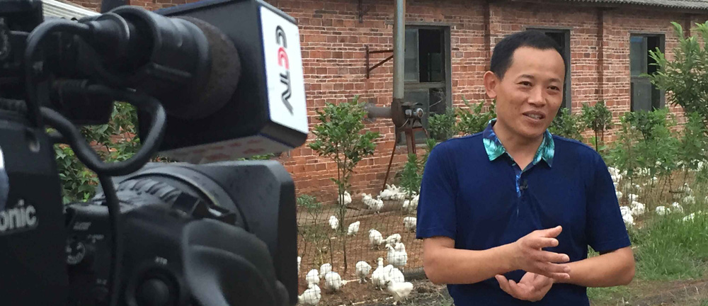
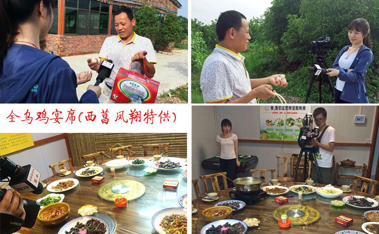
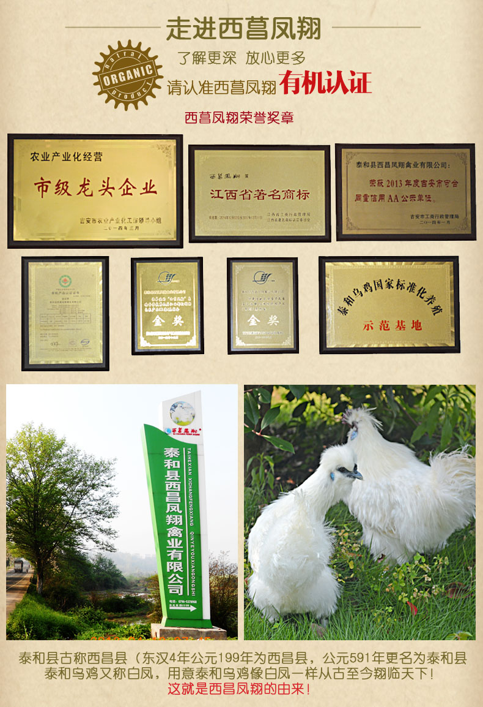
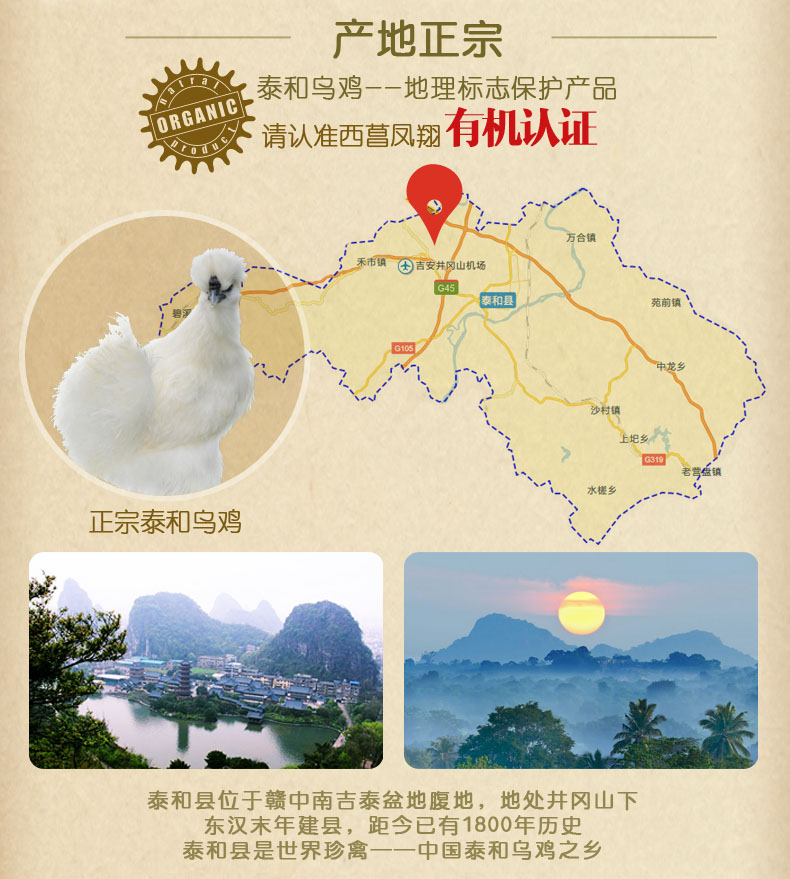
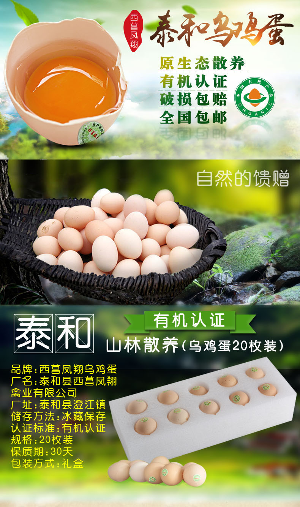

我是泰和县西昌凤翔禽业有限公司的彭建军，是一家专业从事世界珍禽--泰和乌鸡育种、养殖、推广、销售为一体的农业企业。我公司是2015年4月开设天猫店铺的，主要经营有机泰和乌鸡、有机泰和乌鸡蛋，及种蛋等，产品均为自场和西昌凤翔乌鸡养殖专业合作社生产的。没开淘宝店时我们的乌鸡产品主要通过本地线下特产店及大超市销售，很难走远，铺货后夏天有存在质保问题，很是麻烦。
2014年通过政府引导利用互联网＋农业模式，于是开始着手开设天猫店铺，2015年4月正式上线销售。开始销量不大，同时也碰到物流、包装、防震、保鲜等问题。后来一一解决。现在同行销量排前三，最多一天成交了八万多。

1.要有过硬的产品品质和生产能力。
2.产品要有一定特色和知名度。
3.要有周到服务水平和网络运营能力。
4.要坚持干下去。



